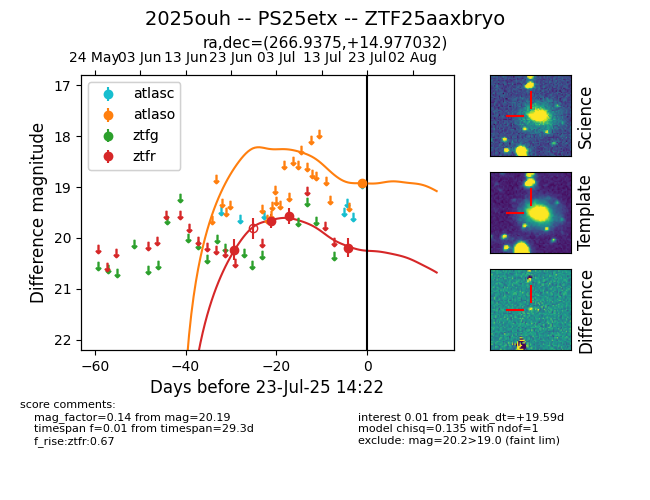

Target ZTF25aaxbryo at 2025-07-23 14:22, see:
FINK: fink-portal.org/ZTF25aaxbryo
Lasair: lasair-ztf.lsst.ac.uk/objects/ZTF25aaxbryo
ALeRCE: alerce.online/object/ZTF25aaxbryo
TNS: wis-tns.org/object/2025ouh
YSE: ziggy.ucolick.org/yse/transient_detail/2025ouh
alt names
ZTF25aaxbryo (ztf,fink)
2025ouh (tns,yse)
PS25etx (panstarrs)
coordinates:
equatorial (ra, dec) = (266.9375,+14.97703)
galactic (l, b) = (39.6339,+20.71348)
photometry
last atlaso=18.93, ztfr=20.19
1 atlaso, 4 ztfr detections
